Data Analysis
Chapter 12: Other Aesthetics
Shih Chien University
2026-06-06
Other Aesthetics
Overview
Position and colour are the two most prominent aesthetics in ggplot2, but a rich set of additional aesthetics is available for encoding data—especially when multiple variables must be represented simultaneously or when a colour-only approach is insufficient.
This chapter covers:
- Size — mapping continuous values to the area or radius of point markers
- Shape — mapping discrete values to point marker shapes
- Line width — controlling the width of lines independently of size
- Line type — mapping discrete values to solid, dashed, dotted, or custom dash patterns
- Manual scales — assigning values to aesthetics by explicit hand-crafted lookup tables
- Identity scales — passing pre-scaled data values directly through to the aesthetic without transformation
Size
Size
The size aesthetic is most commonly used to scale point markers and text labels. The default scale, scale_size(), maps a linear increase in the data variable to a linear increase in the area of the geom — not its radius. Area scaling is the perceptually justified default because human judgements of relative size are better calibrated to area than to linear dimension.
By default, the smallest value in the data is rendered at size 1 and the largest at size 6. The range argument overrides this:
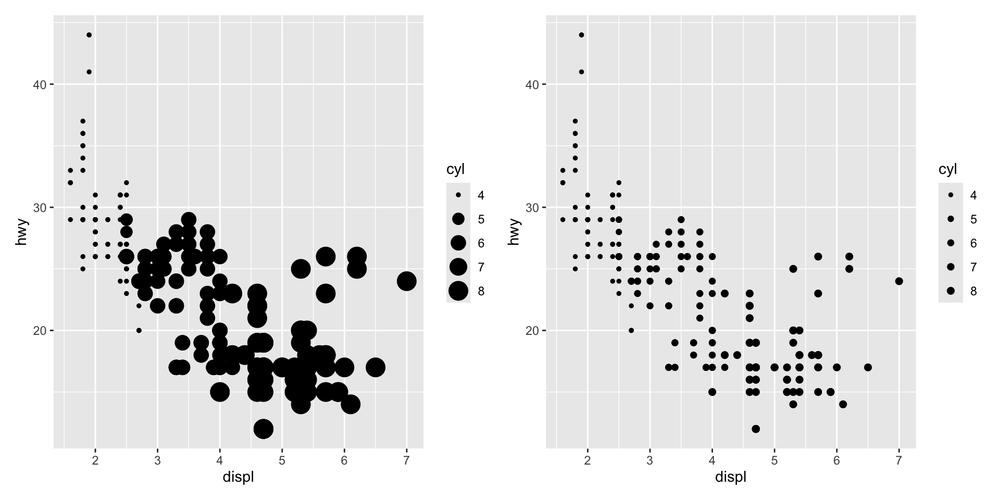
A family of related size scales covers specialised situations:
| Scale | Description |
|---|---|
scale_size_area() |
Area scaling where data value 0 maps to area 0 |
scale_size_binned_area() |
Binned version of scale_size_area() |
scale_radius() |
Maps data values to point radius rather than area |
scale_size_binned() |
Continuous variable mapped to discrete size steps |
scale_size_date() / scale_size_datetime() |
Size scales for date/date-time variables |
Radius Size Scales
Area scaling is not always appropriate. When the data variable is itself a physical radius or diameter, radius scaling should be used instead, via scale_radius().
Consider this dataset of planetary radii:
planets <- data.frame(
name = c("Mercury","Venus","Earth","Mars",
"Jupiter","Saturn","Uranus","Neptune"),
type = c(rep("Inner", 4), rep("Outer", 4)),
position = 1:8,
radius = c(2440, 6052, 6378, 3390, 71400, 60330, 25559, 24764),
orbit = c(5.79e7, 1.08e8, 1.50e8, 2.28e8,
7.78e8, 1.43e9, 2.87e9, 4.50e9)
)
base_pl <- ggplot(planets, aes(1, name, size = radius)) +
geom_point() +
scale_x_continuous(breaks = NULL) +
labs(x = NULL, y = NULL, size = NULL)
base_pl + ggtitle("Default scale_size() — not to scale")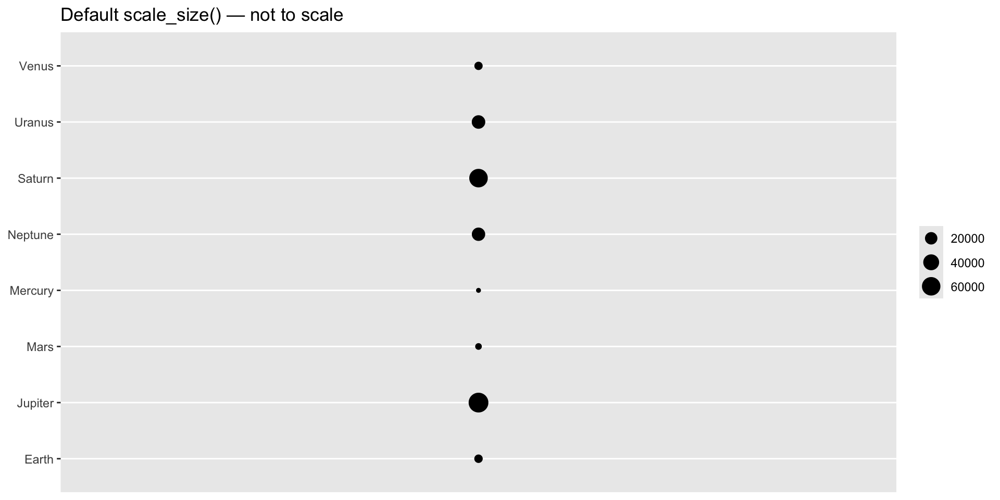
With the default scale_size(), the area of each dot scales with radius², distorting the apparent ratios. Using scale_radius() with limits = c(0, NA) anchors the zero-radius point at zero area and renders proportions faithfully:
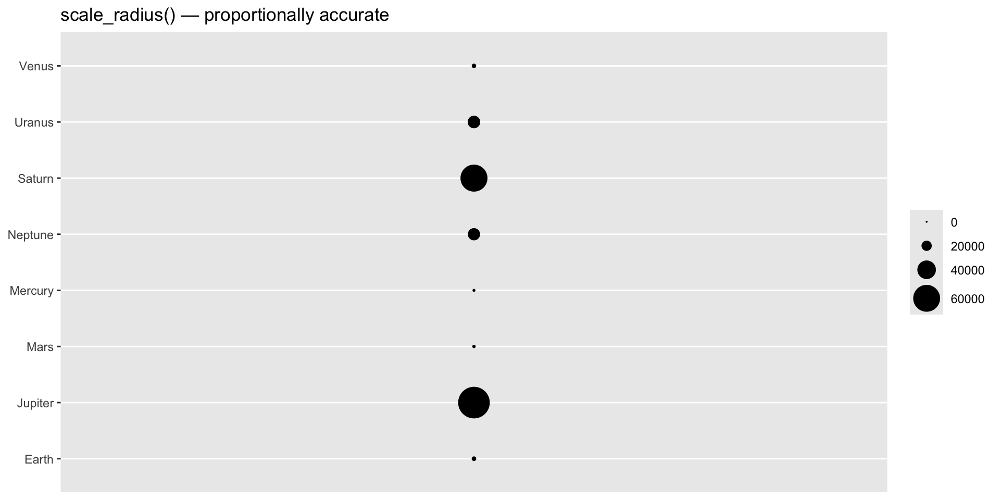
The contrast is immediately visible: Jupiter’s disc is now visibly much larger than Saturn’s, correctly reflecting that the difference between the two exceeds the diameter of Earth.
Binned Size Scales
scale_size_binned() discretises a continuous size variable into a fixed number of size steps, analogously to the binned colour scales seen in §11.4. The legend for a binned size scale is governed by guide_bins() rather than guide_legend().
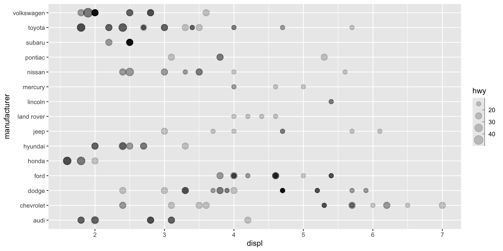
Unlike guide_legend(), which lays out keys in a table, guide_bins() arranges them along a single axis with an optional axis line.
Key arguments of guide_bins():
| Argument | Effect |
|---|---|
axis |
Show/hide the axis line alongside the keys (default TRUE) |
direction |
"vertical" (default) or "horizontal" layout |
show.limits |
Whether tick marks appear at the scale endpoints (default FALSE) |
axis.colour |
Colour of the guide axis line |
| Argument | Effect |
|---|---|
axis.linewidth |
Width of the guide axis line |
axis.arrow |
Add an arrowhead to the axis using arrow() |
keywidth / keyheight |
Key dimensions (grid units) |
reverse |
Reverse the order of the keys |
override.aes |
Override geom aesthetics in the legend keys |
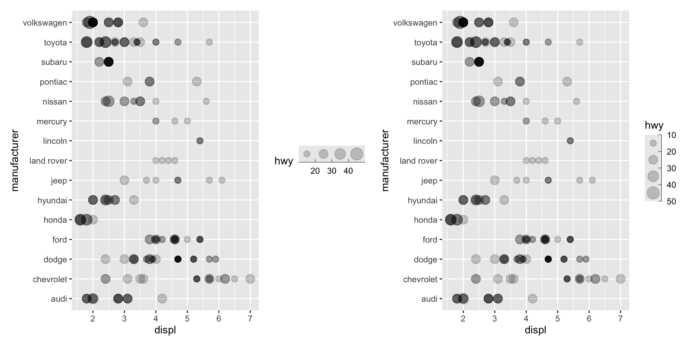
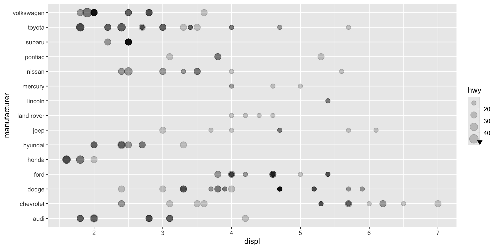
Shape
Shape
The shape aesthetic maps a discrete variable to the marker symbol used for each point. It is suited to variables with at most six distinct categories; beyond that, distinguishing shapes reliably becomes difficult and ggplot2 will issue a warning.
The default scale_shape() provides a mixed palette of three solid and three hollow shapes when solid = TRUE (the default), or six hollow shapes when solid = FALSE:
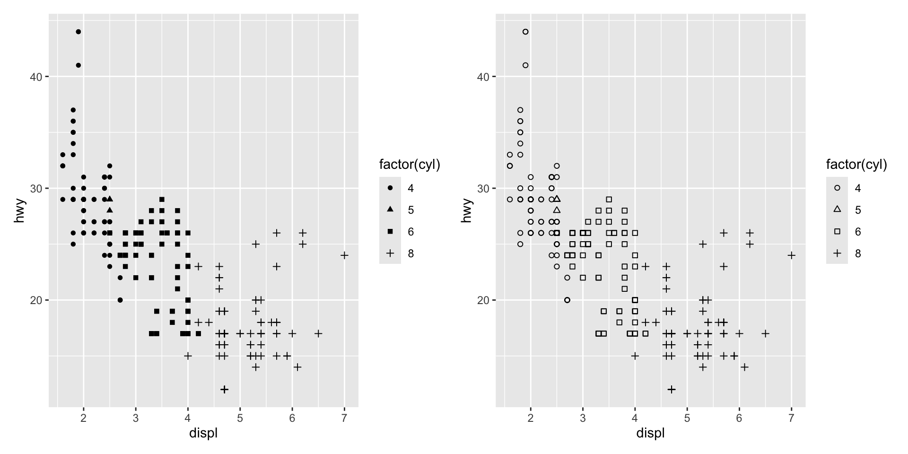
ggplot2 supports 25 distinct shapes, each identified by an integer from 0 to 24:
- Shapes 0–14 are hollow (border only, no fill).
- Shapes 15–20 are solid (filled with the
colouraesthetic). - Shapes 21–24 are filled shapes that respond to both
colour(border) andfillaesthetics independently.
To assign shapes manually, use scale_shape_manual() with a named integer vector:
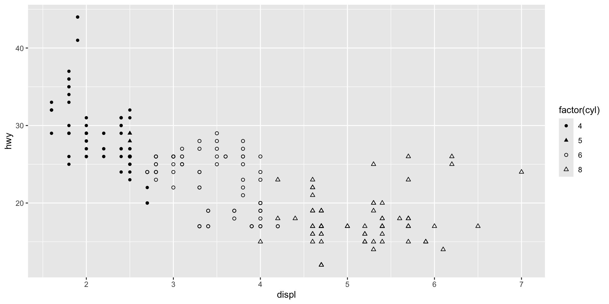
The names of the values vector correspond to the levels of the discrete variable; the integer values correspond to the desired shape codes.
Line Width
Line Width
The linewidth aesthetic, introduced in ggplot2 3.4.0, controls the width of rendered lines. Prior to this version, size served dual duty for both point size and line width, which caused ambiguity for compound geoms such as geom_pointrange() that combine both elements.
The three plots below illustrate the separation: the left uses default values for both aesthetics, the middle increases only size (enlarging the point endpoints), and the right increases only linewidth (thickening the connecting lines):
base_air <- ggplot(airquality, aes(x = factor(Month), y = Temp))
p_def <- base_air +
geom_pointrange(stat = "summary", fun.data = "median_hilow")
p_sz <- base_air +
geom_pointrange(stat = "summary", fun.data = "median_hilow", size = 2)
p_lw <- base_air +
geom_pointrange(stat = "summary", fun.data = "median_hilow", linewidth = 2)
p_def | p_sz | p_lw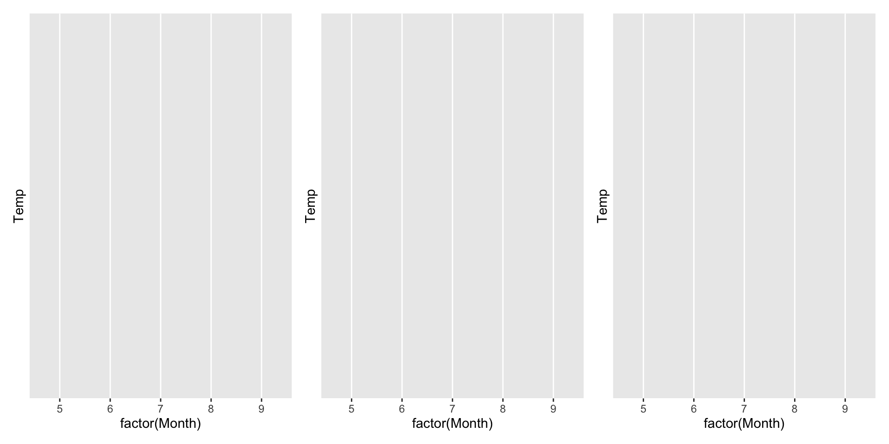
Although linewidth is most often set as a fixed constant, it is a true aesthetic and can be mapped to a data variable. Unlike scale_size(), where area increases proportionally to the data value, scale_linewidth() maps the data value to a linear increase in line width:
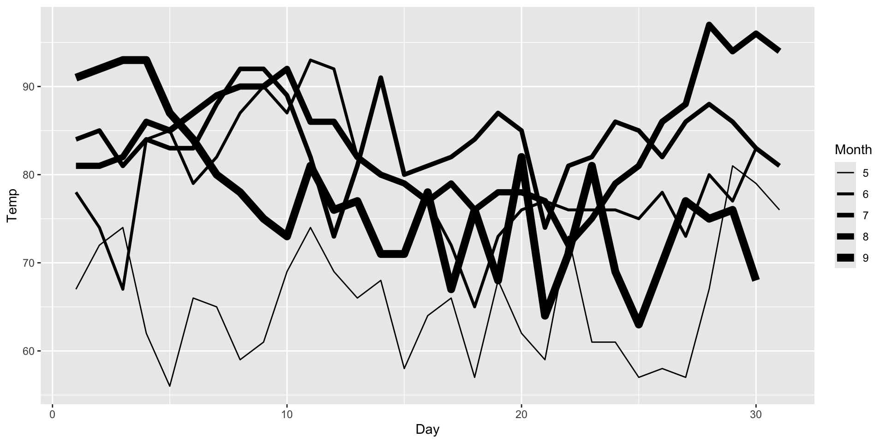
Binned linewidth scales are also available via scale_linewidth_binned(), following the same API as other binned scales.
Line Type
Line Type
The linetype aesthetic maps a discrete variable to the dash pattern of rendered lines. scale_linetype() is an alias for scale_linetype_discrete(). Continuous variables require scale_linetype_binned(); a scale_linetype_continuous() function exists but produces an error by design, as continuous line-type gradients have no perceptual basis.
Line type is best reserved for variables with a small number of categories. Even with five categories the plot can be difficult to parse:
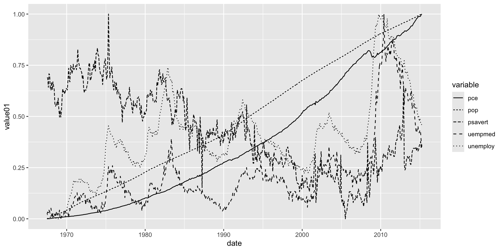
The default palette is scales::linetype_pal(), which provides 13 distinct line patterns. To see all available types:
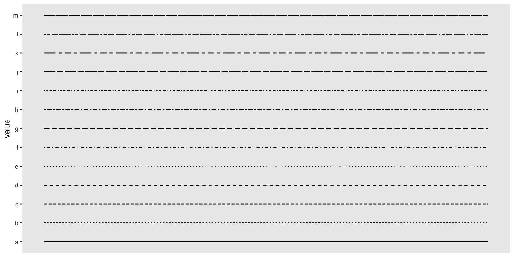
Custom Line Types
Line patterns can also be specified as strings of up to 8 hexadecimal characters (0–F). Each character encodes the length of alternating drawn-segment and gap intervals. For example, "55" means: draw 5 units, gap 5 units (a regular dashed line).
Custom line types can be applied in two ways:
- Using
scale_linetype_manual()with a named character vector of hex strings. - Passing a custom palette function to the
paletteargument ofdiscrete_scale().
linetypes <- function(n) {
types <- c("55", "75", "95", "1115", "111115",
"11111115", "5158", "9198", "c1c8")
types[seq_len(n)]
}
df_lt2 <- data.frame(value = letters[1:9])
ggplot(df_lt2, aes(linetype = value)) +
geom_segment(
mapping = aes(x = 0, xend = 1, y = value, yend = value),
show.legend = FALSE
) +
theme(panel.grid = element_blank()) +
scale_x_continuous(NULL, NULL) +
discrete_scale("linetype", palette = linetypes)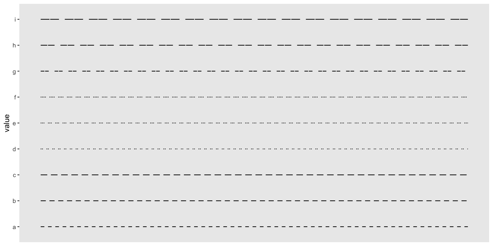
When the number of categories exceeds the number of patterns the palette defines, the excess levels receive NA, which by default renders as a blank (invisible) line. Override this with the na.value argument:
Human-readable string aliases are also valid linetype specifications: "blank", "solid", "dashed", "dotted", "dotdash", "longdash", and "twodash".
Manual Scales
Manual Scales
Manual scales provide an explicit lookup table that maps each discrete data value to a specific aesthetic value. Every aesthetic in ggplot2 has a corresponding manual scale: scale_colour_manual(), scale_fill_manual(), scale_shape_manual(), scale_linetype_manual(), scale_size_manual(), and so on.
The central argument is values: a vector (optionally named) of aesthetic values. When named, ggplot2 matches by name; when unnamed, it matches in the order of the factor levels.
Valid aesthetic values for each aesthetic type are documented in vignette("ggplot2-specs").
Constructing Legends with Manual Colour Scales
A particularly powerful application of scale_colour_manual() is creating an informative legend when multiple variables are displayed on the same plot. Consider this pair of time series offset by ±5 units from the LakeHuron water level:
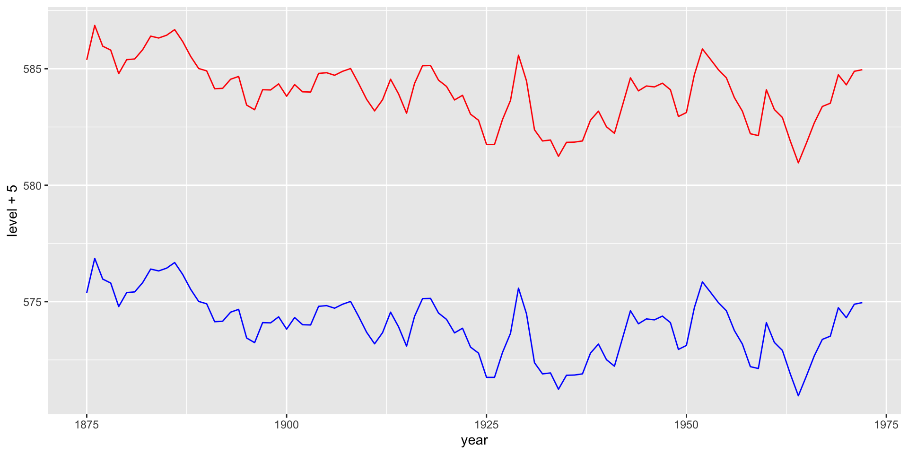
When colour is set as a fixed constant outside aes(), ggplot2 has no way to generate a legend for it.
The solution is to map a label string to the colour aesthetic inside aes(), and then instruct the manual scale how to translate those labels into actual colours:
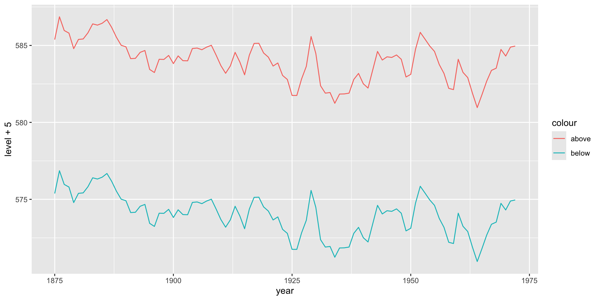
ggplot2 now recognises colour as an aesthetic mapping and automatically generates a legend — though the default colours are not meaningful yet.
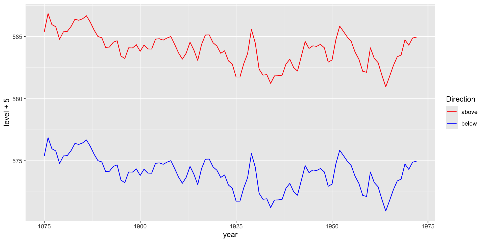
The result is a fully functional legend without requiring a reshaped (“tidy long”) dataset. This pattern is general: any time you need a legend for what would otherwise be a fixed aesthetic, map a character label to the aesthetic inside aes() and decode it through the corresponding manual scale.
Identity Scales
Identity Scales
Identity scales pass data values directly to the aesthetic without any transformation. They are appropriate when the data column already contains valid aesthetic values — for example, a column of colour names such as "red" or hex codes such as "#FF0000", or a column of integer shape codes.
The available identity scales include scale_colour_identity(), scale_fill_identity(), scale_shape_identity(), scale_linetype_identity(), and scale_size_identity().
A compelling example is the luv_colours dataset, which records the locations of all R built-in colour names in the LUV perceptual colour space (the space on which HCL is based):
L u v col
1 9341.570 -3.370649e-12 0.0000 white
2 9100.962 -4.749170e+02 -635.3502 aliceblue
3 8809.518 1.008865e+03 1668.0042 antiquewhite
4 8935.225 1.065698e+03 1674.5948 antiquewhite1
5 8452.499 1.014911e+03 1609.5923 antiquewhite2
6 7498.378 9.029892e+02 1401.7026 antiquewhite3Each row contains a col column holding the actual R colour name for that point. Mapping col to the colour aesthetic and applying scale_color_identity() renders each point in its own colour — the data and aesthetic spaces are identical, so no legend is needed or meaningful:
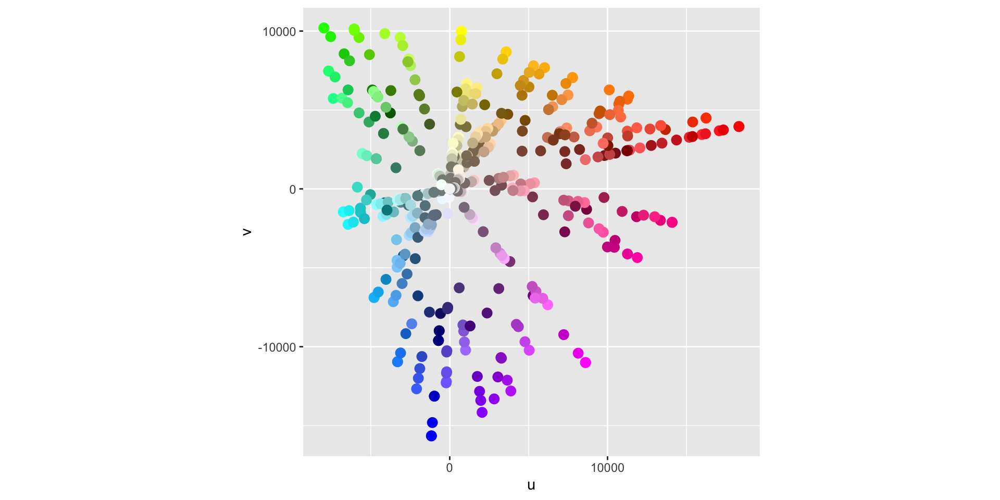
The plot is itself the legend: each dot’s colour is the colour it represents. No additional key is required.
When to use identity scales
Identity scales are appropriate in two situations:
Pre-scaled data: the dataset was constructed with colour names, shape codes, or other aesthetic values already embedded — common when combining outputs from statistical models or external tools.
Programmatic colour assignment: when colour choices are computed algorithmically (e.g., by a custom clustering function) and you want
ggplot2to honour them verbatim rather than applying its own mapping.
In all other situations, a properly specified aesthetic mapping with an appropriate scale is preferred, because it enables legend generation and ensures reproducible, principled colour choices.
Exercises
Using the
mpgdataset, create a scatterplot ofdisplvshwywithsize = cyl. Compare the defaultscale_size()withscale_size_area(). When would you prefer the latter?Build a bubble chart of the
planetsdata showing each planet’s orbital distance on the x-axis and its name on the y-axis, with bubble size proportional to planetary radius. Show whyscale_radius(limits = c(0, NA))is necessary for an honest visual comparison.Create a scatterplot using
mpgwithshape = class. Why does ggplot2 warn whenclasshas more than 6 levels? How doesscale_shape_manual()let you work around this?
Using
airquality, build ageom_pointrange()plot of monthly temperature summaries. Demonstrate the independent effect of increasingsizevslinewidthon the appearance of the geom.Plot
economics_longwithlinetype = variable. Applyscale_linetype_manual()to assign custom hex-pattern line types to each variable. What are the readability limits of the linetype aesthetic?Recreate the
LakeHuronexample from §12.5 usingscale_linetype_manual()instead of colour to distinguish the two series. Which approach (colour or line type) communicates the grouping more clearly, and why?Using
luv_colours, reproduce the identity-scale scatterplot. Then add a second layer using only the subset of colours whose names contain"blue", drawn as larger points with a black border (shape = 21). What doesscale_fill_identity()do in this context?
Acknowledgement
Copyright notice. These teaching materials have been adapted from ggplot2: Elegant Graphics for Data Analysis (3e). All rights are reserved by the original authors and publishers.
Non-commercial use only. These materials are strictly intended for educational purposes and must not be used for commercial gain or profit.
Proper attribution. Any reproduction, distribution, or use of these materials must provide proper attribution to the original source.

ggplot2: Elegant Graphics for Data Analysis